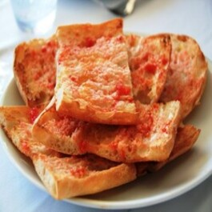

Informació
En aquest article us recomanem 10 àpats imprescindibles i els restaurants on tastar-los, perquè assaboriu al màxim la vostra estada amb les millors mostres d'aquestes delícies catalanes.
1. Pa amb tomàquet
2. Butifarra
3. Crema catalana
4. Escalivada
5. Pollastre rostit a la catalana
6. Calçots
7. Bikini
8. Arròs negre
9. Entrepà de calamars
10. Coques dolces i salades
Imatge
